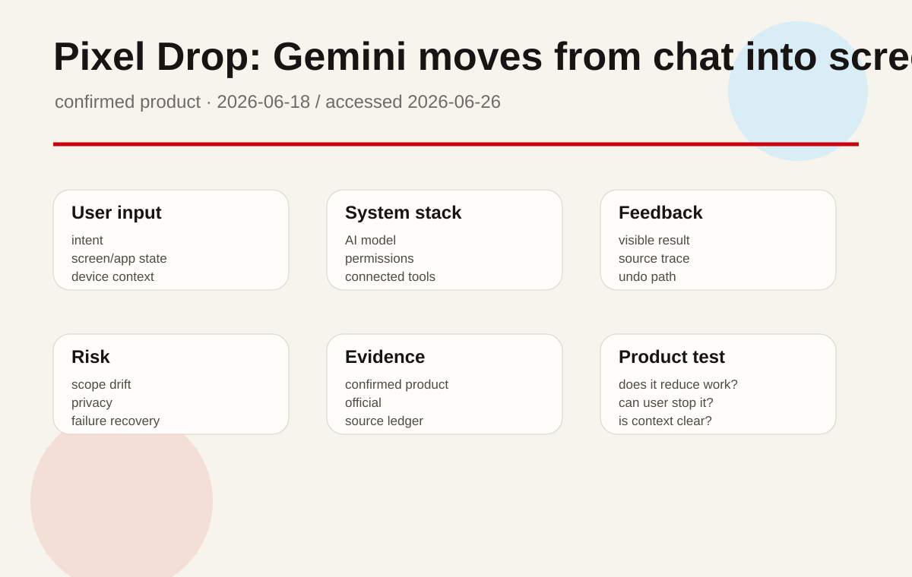
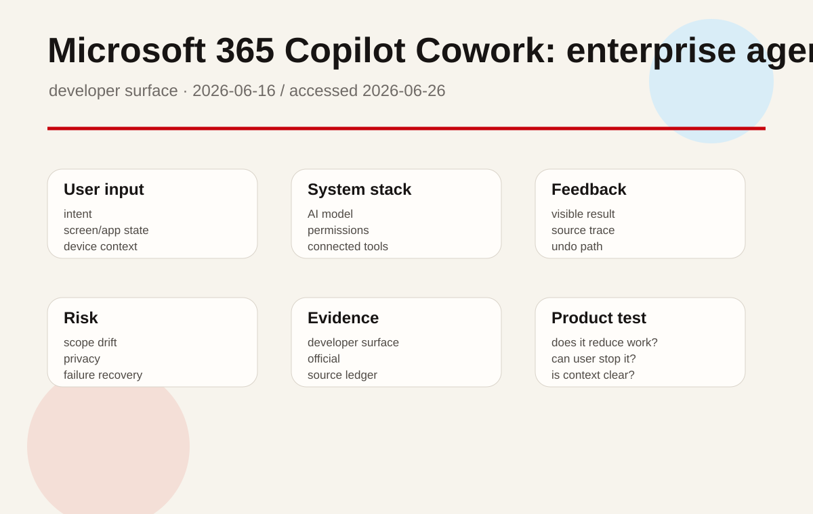
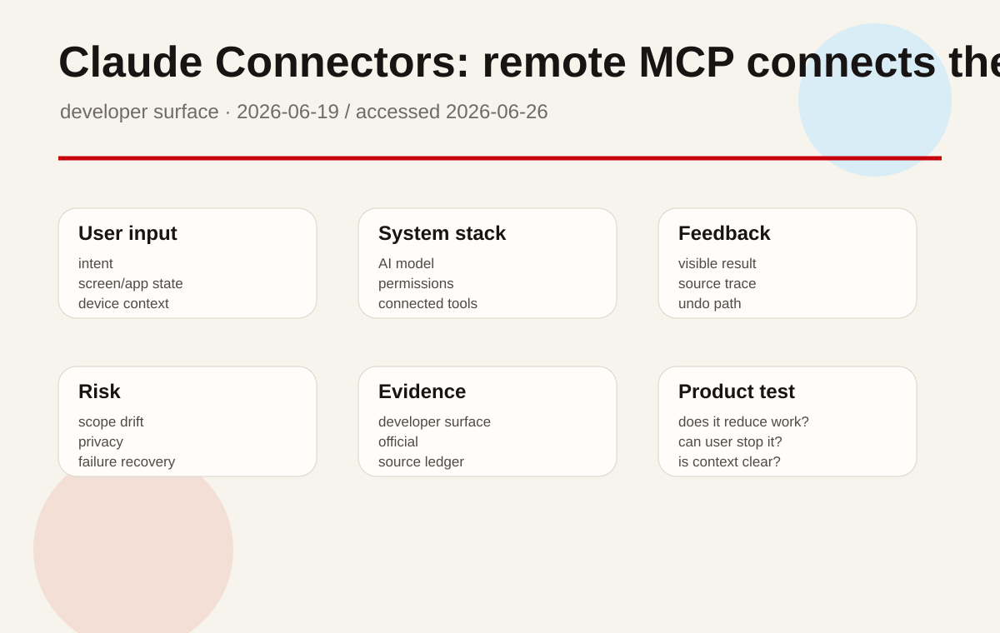
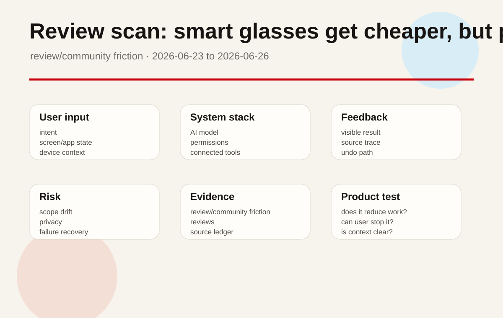
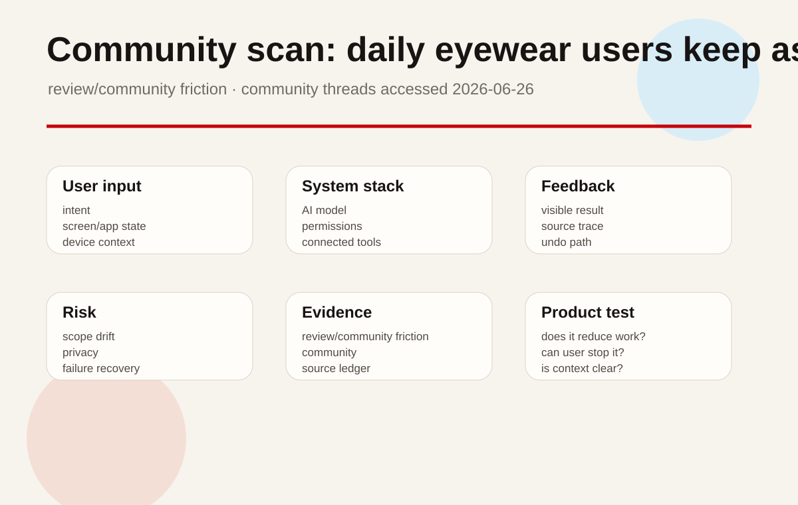
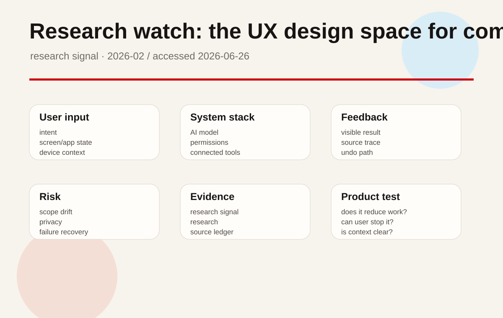
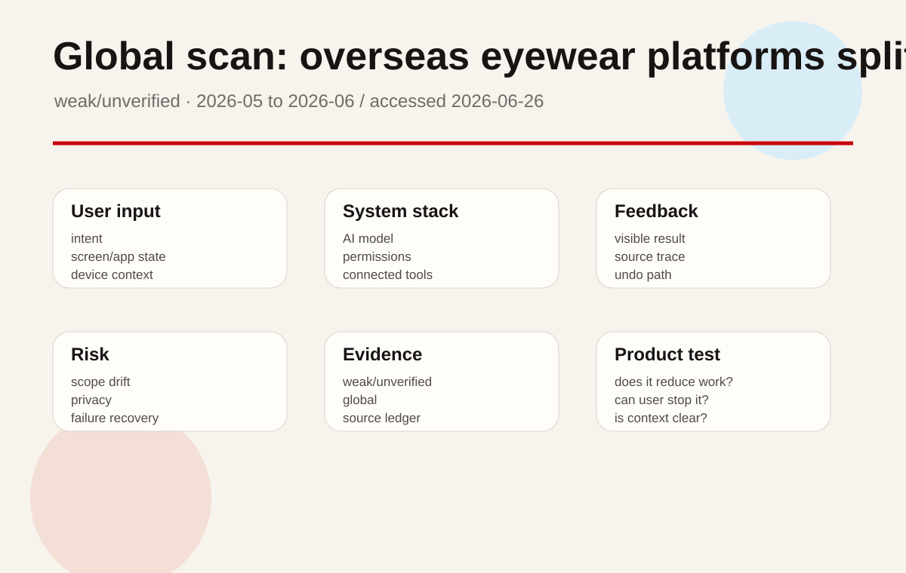

A system update for Pixel phones and tablets, not a standalone AI app. The product surface distributes Gemini creation, screen recording, photo editing, call screening, multitasking, and safety features across the phone so AI appears inside tasks users are already performing.
01
2026-06-26 · America/Toronto
AI Daily
AI leaves the chat box for phones, memory, connectors, and long-running work
Google is putting Gemini creation into Pixel screen recording, music, photos, and calls.
OpenAI, Anthropic, and Microsoft are turning long-term context, external tools, and long tasks into controlled product surfaces.
The HCI question is boundary: when AI reads context, when it acts, and how users undo it.
HCIAI software productsAI hardwareagentic deviceson-device AIenterprise agentssmart glasses
Sources: Cover source

02
Issue map
Structure before evidence
Read today through eight lanes: official products, reviews, community friction, wild products, research, patents, China, and global signals.
03
Official
Official
Official Desk
confirmed product · confirmed product
Pixel Drop: Gemini moves from chat into screen recording, music, and phone creation flows
confirmed product · confirmed product
ChatGPT Enterprise/Edu: memory summary and project-only memory make personalization auditable
developer surface · developer surface
Microsoft 365 Copilot Cowork: enterprise agents move from Q&A into long-running execution
developer surface · developer surface
Claude Connectors: remote MCP connects the assistant to real SaaS permission boundaries
04
Official Desk
Official
confirmed product · confirmed product
2026-06-18 / accessed 2026-06-26
Pixel Drop: Gemini moves from chat into screen recording, music, and phone creation flows
Product: June 2026 Pixel Drop. Google's June 2026 Pixel Drop adds Gemini Omni creation, music generation, screen-recording reactions, Ask Photos editing, multitasking, safety, and call features to Pixel devices.
The user starts from a normal phone task. During screen recording, they can capture their own reaction. For music creation, they open Gemini, use the tools menu, choose Create music, and describe style, vocals, tempo, or upload a photo to generate a track with lyrics. In Photos, they can use Ask Photos to request edits in natural language. In supported regions, phone workflows add Call Screen and Voice Translate. The key interaction pattern is moving from the current phone state into AI, rather than copying material into a separate chat box.
The source-backed stack includes Pixel devices, Gemini, Gemini Omni, Google Photos and Ask Photos, system screen recording, Call Screen, and Voice Translate. The public sources do not state the full device matrix, the exact on-device versus cloud execution split, model parameter details, copyright boundaries for generated music, or every supported country and language combination.
Creators can turn an image or prompt into a soundtrack, record a software walkthrough with their own reaction, produce lightweight video or music material, and ask for photo edits without learning a dense toolbar. Everyday users get faster phone-based photo editing, split-screen or multitasking help, safer calling, and translation assistance. The product is aimed at phone-native creation and communication, not at replacing a professional audio or video workstation.
The update reduces tool fragmentation, the cost of moving content between apps, the weakness of silent screen recordings, the difficulty of command-based photo editing, and the friction of cross-language calls. The product impact is that AI becomes part of the operating path of the phone rather than a destination the user must visit.
Press coverage has focused on Gemini Omni, Call Screen in India, Voice Translate, Screen Reactions, and AI music generation, which confirms that outside observers read the update as a phone workflow release rather than a model-only announcement. Broad community sentiment is not yet stable in the cited sources, so it is marked source not stated.
The new technology is the integration of Gemini Omni and Gemini creation tools into mobile system contexts: text or image to music, reaction-aware screen recording, natural-language photo editing through Ask Photos, call translation, and call screening. The novelty is not a single algorithmic claim; it is the system handoff between media state, user intent, and AI generation.
Google says the update is rolling out to Pixel devices starting today. The India post confirms a local version of the update. Exact availability by Pixel model, feature, and country is source not stated and should be checked before promising a feature to a user.
The sources do not explain which steps run on device, which run in the cloud, or how generated music rights are handled. They also do not fully specify recovery behavior after a failed AI edit, or whether all Pixel devices receive every feature. Those details matter because the update touches private media and communication workflows.
This is the most concrete confirmed product update today. AI is no longer waiting only inside the Gemini app; it is entering screen recording, photos, calls, music, and multitasking. Product teams should watch permission prompts, undo behavior, generated-content labeling, and regional fragmentation. Product verification should stay concrete: confirm the entry point the user touches first, list the exact context the system reads, name the permission or account boundary that constrains the action, show where the result lands, and test the recovery path after a wrong generation, failed connector call, or mistaken delegated action. If any of those surfaces are missing from the cited source, the issue treats the gap as an unknown rather than filling it with market logic.
05
Official Desk
Official
confirmed product · confirmed product
2026-06-25 / accessed 2026-06-26
ChatGPT Enterprise/Edu: memory summary and project-only memory make personalization auditable
Product: ChatGPT improved memory for Enterprise/Edu and project-only memory. OpenAI's June 25, 2026 Enterprise/Edu release notes describe improved memory, user-visible memory summaries, admin early access controls, and project-only memory in ChatGPT release notes.
A personalization and context-control surface for ChatGPT Enterprise and Edu. This is not a new model launch; it is a product layer that defines what the assistant can remember, where that memory applies, whether users can review a summary, and how workspace administrators can enable or disable the experience.
An admin enables Use improved memory in Workspace settings during an early-access period of about two weeks. After early access, eligible workspaces will have the improved experience turned on by default unless the admin opts out. During use, ChatGPT can draw on relevant context from past chats so responses stay current as work changes. Users can review a memory summary showing information ChatGPT may use. Separately, project-only memory can be enabled when creating a project, allowing ChatGPT to use conversations inside that project while excluding saved memories from outside the project and avoiding carryover from the project into future external chats.
The source-backed stack includes ChatGPT Enterprise, ChatGPT Edu, workspace admin settings, improved memory, memory summary, a legacy Saved memories fallback, and project-only memory. The documents do not state the underlying model, summary refresh cadence, retention period, admin audit-log fields, or every country and plan rollout detail.
The feature supports long-running enterprise research, classroom work, customer-support knowledge, product planning, and team-specific operating context. Project-only memory is especially important for client work, courses, legal matters, and research themes where the assistant should be context-rich inside one boundary and context-blind outside it. Users no longer need to restate the same background every session, but they get a visible summary of what the system may use.
The product addresses two opposing pains: AI work needs continuity, but continuity can leak context across boundaries. A user-visible memory summary turns an invisible personalization layer into something inspectable. Project-only memory makes separation between workstreams clearer. Admin controls and the fallback to legacy Saved memories create an operational escape path.
The cited official sources do not include user quotes, so direct user sentiment is source not stated. The product design itself responds to predictable enterprise objections: wrong memories, cross-project leakage, compliance review, and default-on behavior. Those objections should be tested in deployment rather than treated as solved by documentation.
The new technology is an evolving context layer that can be summarized, reviewed, scoped to projects, and controlled by administrators. For HCI, the important move is that personalization becomes an editable system object instead of a mysterious assistant habit.
The Enterprise improved-memory experience begins with early access for roughly two weeks and then turns on by default for eligible workspaces unless admins opt out. Edu is covered in the same release-note family. Project-only memory is described in ChatGPT release notes as an option when creating a project. Exact country, plan, and tenant availability is source not stated.
The documentation does not disclose summary-generation rules, conflict handling, retention periods, export formats, or precise error-recovery behavior for incorrect memories. The product will need fast user controls for review, deletion, and scoping; otherwise personalization becomes an invisible risk.
This is a high-value enterprise UX update. Long-term AI context is only suitable for real organizations when it is visible, scoped, reversible, and administratively controllable. The product read is positive, but rollout should be judged on summary accuracy, project isolation, and admin defaults. Product verification should stay concrete: confirm the entry point the user touches first, list the exact context the system reads, name the permission or account boundary that constrains the action, show where the result lands, and test the recovery path after a wrong generation, failed connector call, or mistaken delegated action. If any of those surfaces are missing from the cited source, the issue treats the gap as an unknown rather than filling it with market logic.
06
Official Desk
Official
developer surface · developer surface
2026-06-16 / accessed 2026-06-26
Microsoft 365 Copilot Cowork: enterprise agents move from Q&A into long-running execution
Product: Microsoft 365 Copilot Cowork. Microsoft 365 Roadmap describes Copilot Cowork as generally available for long-running, multi-step work across work data, business systems, connected apps, and existing security governance.

An enterprise long-running agent surface. It is not a single prompt-answer panel; it packages multi-step tasks, work data, business systems, partner plugins, templates, image generation, and security governance into Microsoft 365 Copilot's execution layer.
A user or team starts from Microsoft 365 Copilot and selects or configures a task that may run over time: preparing account updates, following up across project systems, generating a report, or coordinating a business workflow. Copilot Cowork operates across work data, connected apps, and plugins while inheriting tenant permissions and security controls. The interaction shifts from asking a question to defining a job, monitoring progress, reviewing outputs, and intervening when the agent needs approval or correction.
The source-backed stack includes Microsoft 365 Copilot, Copilot Cowork, work data, business systems, connected apps, partner plugins, integrated security and governance controls, branded templates, and image generation. The public page does not state the execution sandbox, task queue design, retry behavior, complete audit fields, or full plugin list.
Sales operations can ask an agent to prepare account updates across CRM, email, and documents. Project teams can track status across multiple systems. Marketing can generate campaign materials from branded templates. Managers can ask for grounded summaries of work data. The product serves cross-application, multi-hour or multi-day knowledge work rather than instant chat.
Ordinary Copilot answers help, but enterprise drag comes from moving information between systems, following up repeatedly, formatting output, and searching within permissions. Cowork attempts to consolidate these steps into a governed agentic workflow, reducing constant switching between mail, spreadsheets, CRM, documents, and chat.
The cited roadmap does not include direct customer quotes, so user voice is source not stated. The predictable deployment questions are whether the agent oversteps permission boundaries, changes shared documents without enough confirmation, hides progress, or leaves ownership unclear after failure. Those are the experience checks that matter.
The new technology is not one model feature; it is long-running work orchestration inside an enterprise shell. Multi-model intelligence, plugins, organizational permissions, templates, and governance are combined into a task surface. The user interface expands from the text box to job state, permission explanation, result acceptance, and audit trail.
Microsoft 365 Roadmap marks Copilot Cowork as generally available and describes capabilities available as of June 16. Exact tenant eligibility, license requirements, countries, plugin availability, and default enablement are source not stated.
The public material does not explain failure recovery, human approval steps, pause or undo, audit export, or cross-app permission prompts in detail. Without those surfaces, a long-running agent becomes opaque automation.
This is a key enterprise-agent shape. The value is not smarter answers; it is maintaining cross-system work on behalf of users. The experience will stand or fail on task visibility, permission boundaries, failure recovery, and auditable outputs. Product verification should stay concrete: confirm the entry point the user touches first, list the exact context the system reads, name the permission or account boundary that constrains the action, show where the result lands, and test the recovery path after a wrong generation, failed connector call, or mistaken delegated action. If any of those surfaces are missing from the cited source, the issue treats the gap as an unknown rather than filling it with market logic.
07
Official Desk
Official
developer surface · developer surface
2026-06-19 / accessed 2026-06-26
Claude Connectors: remote MCP connects the assistant to real SaaS permission boundaries
Product: Claude Connectors with remote MCP. Anthropic support docs state that Claude connectors can access apps and services, retrieve data, and take actions while inheriting each user's permissions; custom connectors can use remote MCP servers.

An external-app connection layer for Claude. This is not a new chat trick; it connects Claude to data and action systems such as file stores, project tools, CRMs, and custom remote MCP servers while constraining access through the user's permissions in the source service.
A user or admin connects a pre-built connector, or a developer exposes an internal system through a remote MCP server as a custom connector. When the user asks Claude to answer a knowledge-heavy question or perform a task, Claude can retrieve external data, read context, or take actions through the connector. If the user cannot access a file, channel, or record in the source system, the connector cannot access it either. The experience must therefore focus on authorization, scope confirmation, source citation, and action confirmation.
The source-backed stack includes pre-built web connectors, custom connectors, remote MCP servers, inherited user permissions, external app and service access, data retrieval, and action execution. The exact connector catalog can change. OAuth scopes, audit-log details, rate limits, plan availability, and the full action-approval UI are source not stated.
Knowledge workers can ask Claude to summarize project files, retrieve customer context, compare policy documents, or extract facts from ticket systems. Enterprise developers can expose internal tools through remote MCP so Claude can operate inside business systems without bypassing the existing permission model.
A standalone chatbot lacks the user's real work context. Users resort to copying and pasting material, which is slow, stale, and risky. Connectors turn data access into an authorized product surface, reducing manual transfer and moving access control back to the source system.
The cited support pages do not include user quotes, so user voice is source not stated. The likely friction points are over-broad authorization, whether Claude clearly cites the connected source, whether it asks before taking action, and whether a bad connection can be revoked quickly.
Remote MCP matters because it standardizes agent capability as a remote tool and data boundary. It lets Claude move from conversational answer generation into existing work systems while inheriting permissions rather than inventing a parallel access model.
The support documentation describes connectors as available and custom connectors with security and privacy caveats. Exact plan, regional, and connector-by-connector availability is source not stated.
More connectors increase risk: wrong authorization, cross-system mis-actions, stale data, and untraceable citations. The public documentation does not fully specify approval UI, undo paths, audit fields, or enterprise monitoring for every action type.
This is a critical agent-product surface for Claude. Useful assistants need work data, but deep connection requires inherited permissions, transparent citations, action confirmation, and fast revocation. Product verification should stay concrete: confirm the entry point the user touches first, list the exact context the system reads, name the permission or account boundary that constrains the action, show where the result lands, and test the recovery path after a wrong generation, failed connector call, or mistaken delegated action. If any of those surfaces are missing from the cited source, the issue treats the gap as an unknown rather than filling it with market logic.
08
Reviews
Reviews
Review Desk
review/community friction · review/community friction
Review scan: smart glasses get cheaper, but privacy, wearability, and use-case fit remain the friction
09
Review Desk
Reviews
review/community friction · review/community friction
2026-06-23 to 2026-06-26
Review scan: smart glasses get cheaper, but privacy, wearability, and use-case fit remain the friction
Product: Smart glasses review-lane scan. WSJ, The Verge, and Meta's own launch material show AI glasses expanding in price and style, while review attention stays on user fit, wearability, and privacy trust.

A media review and market scan, not confirmation of one new product. The scanned set includes Meta Glasses, Ray-Ban/Oakley Meta, Snap Specs, Google/Samsung/Warby Parker/Gentle Monster directions, and lower-cost displayless or display eyewear.
The user wears the device on the face and uses voice, button, touch, or future display layers for photo capture, video, translation, calls, AI recognition, navigation, and lightweight assistance. Review attention is less about the feature checklist and more about whether people will actually wear the device at work, on the street, in restaurants, or around family.
Meta's new glasses start at $299. WSJ describes a broader market spanning entry-level products and high-end devices, with camera, AI assistant, in-lens display, and audio variations. Exact sensors, chips, and battery claims cannot be transferred across brands; where a specific source does not state a detail, the dossier marks it source not stated.
Convenient audio, hands-free capture, AI visual recognition, accessibility, field technician work, creator first-person content, and commuting translation are all discussed. Each use case has different requirements for privacy, display brightness, weight, battery life, and social acceptability.
Smart glasses attempt to reduce the phone-pull problem, give assistants visual context that earbuds lack, and avoid the weight and cost of full AR headsets. The review friction shows the category also creates new bystander-consent, covert-recording, awkward-wearability, and all-day battery problems.
The review framing asks who smart glasses are actually for, and The Verge hands-on coverage continues to foreground privacy. This issue does not treat those questions as product facts; it treats them as review friction that product teams must design around.
The new technology is not a single model. It is the face-worn bundle of camera, AI, open-ear audio, translation, navigation, and possible future display. The hard HCI work is making device state understandable to people around the wearer as well as to the wearer.
Meta Glasses are announced and available through cited channels. Other products and regions vary. WSJ is a market scan rather than a single purchase page, so inventory and availability are source not stated.
There is not enough long-term wear data, abuse-rate evidence, country-by-country regulatory evidence, or prescription-lens support evidence in the scanned material. No rumor-only eyewear item is promoted as a confirmed product today.
The lane read is that AI eyewear has moved into mainstream price territory, but the primary design problem is now social acceptability and task fit. Status lights, recording prompts, bystander-visible feedback, and fast disable controls belong in the core flow. Product verification should stay concrete: confirm the entry point the user touches first, list the exact context the system reads, name the permission or account boundary that constrains the action, show where the result lands, and test the recovery path after a wrong generation, failed connector call, or mistaken delegated action. If any of those surfaces are missing from the cited source, the issue treats the gap as an unknown rather than filling it with market logic.
10
Community
Community
Community Friction
review/community friction · review/community friction
Community scan: daily eyewear users keep asking for normal looks, privacy, all-day battery, and readable displays
11
Community Friction
Community
review/community friction · review/community friction
community threads accessed 2026-06-26
Community scan: daily eyewear users keep asking for normal looks, privacy, all-day battery, and readable displays
Product: Smart glasses community friction scan. Reddit SmartGlasses and RayBanStories discussions cluster daily-use requirements around normal looks, privacy, all-day battery, readable text, easy use, and battery anxiety.

A community-signal scan, not a source of confirmed sales or specifications. It aggregates user friction around everyday smart-glasses wear and should be used as risk input, not as a substitute for official specs or shipment data.
Users are not testing launch-stage demos; they are deciding whether to keep wearing glasses during travel, commuting, work, prescription use, and ordinary social life. Discussions cluster around whether the frames look normal, whether the device has a camera, whether it lasts all day, whether text remains readable in different lighting, and whether operation is simple.
The community mentions products such as MemoMind, Halliday, Meta, and Ray-Ban, but the posts are not official specification sources. Battery, weight, price, sensor, and brightness claims cannot be generalized across products from comments. Any number not confirmed by official or review sources is source not stated.
Travel translation, walking navigation, notification viewing, audio listening, quick capture, prescription all-day wear, meeting or learning notes, and accessibility support all appear as real use cases. The community cares less about whether the assistant can answer a complex demo prompt and more about whether the device fits into life without embarrassment or interruption.
Good smart glasses reduce phone retrieval, earbud isolation, temporary photo capture friction, and environmental query friction. The community signal shows the first blockers are whether the user dares to wear the device outside and whether the battery survives the day.
Representative community phrases include wanting normal looks, privacy for the wearer and people around them, full-day battery life, bright and sharp text in different conditions, and easy use. Other users describe Ray-Ban Meta as usable but battery-limited. These are treated only as friction signals.
The community's implied technology request is low-power display, privacy-friendly sensing, fast charging, prescription compatibility, and quieter input feedback. More AI slogans do not address the daily-use bottleneck.
The community discussions span several products and future products. They cannot verify inventory, launch regions, or retail availability. Availability remains source not stated unless linked to official pages.
Reddit samples skew toward early adopters. Purchase status is not always verifiable. A single comment cannot establish market-wide demand. The lane is useful because it points to failure modes, not because it proves adoption.
The design takeaway is direct: for smart glasses to move from novelty to daily tool, they must first pass five gates: normal appearance, privacy, battery, readable feedback, and low operational complexity. Product verification should stay concrete: confirm the entry point the user touches first, list the exact context the system reads, name the permission or account boundary that constrains the action, show where the result lands, and test the recovery path after a wrong generation, failed connector call, or mistaken delegated action. If any of those surfaces are missing from the cited source, the issue treats the gap as an unknown rather than filling it with market logic.
12
Wild
Wild
Wild Desk
startup signal · startup signal
Comet: the AI browser delegates search, tabs, email, and web tasks to one assistant surface
13
Wild Desk
Wild
startup signal · startup signal
2025-07-09 / accessed 2026-06-26
Comet: the AI browser delegates search, tabs, email, and web tasks to one assistant surface
Product: Perplexity Comet. Perplexity's Comet page frames it as an AI browser and personal assistant for web research, email, tabs, shopping, and travel planning; TechCrunch reported its Perplexity search default at launch.
An AI-first browser and personal assistant. It turns the new tab page, search, web reading, email, shopping, and travel planning into an agent workspace rather than placing a chat sidebar next to a conventional browser.
The user opens Comet as a browser, searches, visits pages, and signs into services. During browsing, they ask the assistant to summarize, compare, organize tabs, clean up email, shop, or plan travel. The system uses browser context, page content, search results, account state, and the user's instruction, then returns output into the current browsing session or page workflow.
The source-backed stack includes the Comet browser, Perplexity AI search as a default experience at launch, an assistant for web tasks, email organization, shopping, travel planning, and privacy or safe-browsing FAQ surfaces. Chromium architecture, extension compatibility, per-site permission models, background-task limits, and enterprise management are source not stated.
Researchers can ask the browser to synthesize multiple pages. Shoppers can compare products and potentially complete ordering workflows. Travelers can plan itineraries. Office users can organize inboxes and tabs. Product testers can observe how agents behave inside real web interfaces rather than controlled demos.
Traditional browsing forces users to decompose tasks manually: search, open tabs, copy information, fill forms, compare options, and switch to email. Comet attempts to merge these steps into an agentic browsing loop, reducing repetitive navigation and context transfer.
Early community discussion has focused on waitlists, whether the product is essentially Chromium with an assistant, privacy, and the boundary of website automation. The cited sources do not provide stable large-scale satisfaction data, so user voice is source not stated and the item remains a startup signal.
The new technology is the browser context as the default agent operating surface. Search engine, page content, tab state, account session, and user task are combined inside one shell instead of being scattered across browser, chatbot, and automation tools.
The official page offers a Comet download. TechCrunch reported that initial launch access went first to Max subscribers and a small group of waitlist invitees. Current exact free versus paid status, region support, and platform matrix are source not stated and should be verified on the download page.
Agent browsers inherit account permissions, purchase confirmation risk, website terms, bot detection, and mis-click risk. Without clear approval, undo, and site-level scoping, users will not trust the browser to execute real transactions.
Comet is a strong startup signal for the browser becoming an execution shell rather than an information retrieval tool. Its value depends on making every automated step visible, pausable, and recoverable. Product verification should stay concrete: confirm the entry point the user touches first, list the exact context the system reads, name the permission or account boundary that constrains the action, show where the result lands, and test the recovery path after a wrong generation, failed connector call, or mistaken delegated action. If any of those surfaces are missing from the cited source, the issue treats the gap as an unknown rather than filling it with market logic.
14
Research
Research
Research Watch
research signal · research signal
Research watch: the UX design space for computer-use agents is becoming systematic
15
Research Watch
Research
research signal · research signal
2026-02 / accessed 2026-06-26
Research watch: the UX design space for computer-use agents is becoming systematic
Product: Computer-use agent UX research scan. The arXiv paper Mapping the Design Space of UX for Computer Use Agents studies existing systems, interviews eight practitioners, and runs a 20-participant Wizard-of-Oz study to map UX considerations.

A research signal, not a product launch. It studies LLM-based computer-use agents as an interaction category: agents execute user commands by interacting with UI elements, while users need to understand what the agent is doing, why it is doing it, and when they should take over.
The typical flow is that a user states a goal, the agent observes the screen or UI layer, plans actions, clicks, types, navigates, and reports results. The Wizard-of-Oz study simulates agent behavior to observe how users want to supervise, correct, and trust these systems.
The paper states a two-phase method: Phase 1 reviews nine computer-use agents announced in 2024 and 2025, then refines themes through interviews with eight UX and AI practitioners. Phase 2 uses a Wizard-of-Oz study with 20 participants. The paper does not prove commercial product performance, model identity, or availability.
The research is relevant to browser agents, enterprise workflow automation, desktop assistants, test automation, form filling, and cross-application tasks. It acts as a design lens for today's Comet, Copilot Cowork, and Claude connectors, not as direct evidence for any one product.
The research addresses a gap for product teams: there is not yet a stable interaction vocabulary for agents that operate software. Designers need patterns for when to show plans, how to request authorization, how to express uncertainty, how users correct the agent, and how systems avoid opaque clicking.
User evidence comes from study participants and practitioners, not public consumer reviews. It is useful for design hypotheses and risk framing, but it does not establish market demand or product success.
The new technical category is agents turning natural-language goals into GUI behavior. The HCI problem is that direct manipulation is being partially replaced by delegated manipulation, so systems need observation, approval, correction, and rollback surfaces.
The paper and preprint are accessible. It is not a commercial product. Launch date, price, customers, and regions do not apply.
The sample is limited, and Wizard-of-Oz behavior does not equal deployed model reliability. Findings should be downgraded as a research signal and never presented as proof that products have solved these issues.
The research sets a hard constraint for every agent product today: execution is not enough. Users must be able to understand the path, authorize critical steps, and recover from errors. Product verification should stay concrete: confirm the entry point the user touches first, list the exact context the system reads, name the permission or account boundary that constrains the action, show where the result lands, and test the recovery path after a wrong generation, failed connector call, or mistaken delegated action. If any of those surfaces are missing from the cited source, the issue treats the gap as an unknown rather than filling it with market logic.
16
Patent
Patent
Patent Watch
patent signal · patent signal
Patent watch: smartglasses patents imagine eyewear controlling mobile tasks with AI
17
Patent Watch
Patent
patent signal · patent signal
patent accessed 2026-06-26
Patent watch: smartglasses patents imagine eyewear controlling mobile tasks with AI
Product: Smartglasses AI control patent signal. A Google Patents entry describes smartglasses, smartwatch, and smartphone connection management, control panels, and AI-assisted control of mobile device tasks and application information.
A patent watch item, not a confirmed product. It describes systems in which smartglasses, smartphones, and smartwatches pair and use AI to control mobile device tasks and application information while preserving visual acuity.
The patent figures include smartglasses, smartwatch, smartphone, a connection manager screen, and a control panel. The imagined flow is that the user triggers a task through glasses or a paired device, while the system manages input and output data between mobile devices and glasses and presents task or augmented-reality information to the user.
The patent text covers smartglasses, smartwatch, smartphone, connection manager, control panel, AI control, mobile device tasks, applications, and augmented-reality information. It is not a current product spec. Chip, weight, battery, price, and launch date are all source not stated.
The signal points toward future phone-glasses coordination: viewing phone tasks through glasses, using AI to decide what information appears, receiving app state through eyewear, and using a watch or phone for auxiliary input. WIPO's Rokid industry profile shows lightweight glasses in museum, industrial, and consumer settings, but that is a separate evidence chain from the patent.
The underlying problem is that phone information is abundant and phone retrieval is costly, while eyewear displays can obstruct vision. The patent's direction is to use AI to select and control task presentation so the visual burden is lower.
Patents do not include user voice. The WIPO industry profile is not a consumer review. Adoption, usability, and comfort cannot be inferred from the patent.
The signal is multi-device control. Glasses are not imagined as an isolated display; they become one part of an AI control surface with phone and watch. AI may filter, control, and adapt information presentation.
There is no product availability. A patent publication or grant does not equal a launch, roadmap, or company commitment.
The patent is broad and may be defensive or historical. It does not prove that Google, Rokid, or any vendor will implement the system. This item must remain explicitly downgraded as a patent signal.
The patent lane is useful because it shows a plausible next interface: smart glasses as an AI control layer for phone tasks rather than a standalone phone replacement. It contributes no confirmed product fact today. Product verification should stay concrete: confirm the entry point the user touches first, list the exact context the system reads, name the permission or account boundary that constrains the action, show where the result lands, and test the recovery path after a wrong generation, failed connector call, or mistaken delegated action. If any of those surfaces are missing from the cited source, the issue treats the gap as an unknown rather than filling it with market logic.
18
China
China
China / Global Compare
weak/unverified · weak/unverified
China scan: edge AI shifts from model compression toward chips, systems, and concrete device scenarios
19
China / Global Compare
China
weak/unverified · weak/unverified
2026-06-03 to 2026-06-22
China scan: edge AI shifts from model compression toward chips, systems, and concrete device scenarios
Product: China edge-AI hardware lane scan. Recent 36Kr scans of edge AI and agent appliances emphasize co-design across models, chips, systems, AI PCs, local compute, vertical solutions, and eyewear devices.
A China edge-AI and hardware ecosystem scan, not one confirmed product. The scanned surface includes on-device models, AI PCs, local inference boxes, vertical agent appliances, AI glasses, and domestic wearable ecosystems.
At the user level, the entry point is no longer only a phone app. AI may run locally on a PC, handle business work on an industry appliance, listen or translate through glasses, or answer through office equipment with lower latency. The interaction pattern becomes device-first sensing, partial local inference, and cloud escalation only when useful.
36Kr discusses Apple's AFM3 on-device direction, local compute, AI PCs, RTX Spark, large models running locally, and several categories of industry players. The SSPAI long-term review discusses Qianwen G1's domestic ecosystem fit, voice interaction, capture, and response experience. Specific chips, models, weight, battery, and prices must be cited product by product; otherwise they are source not stated.
Industry use cases include local knowledge bases, meeting devices, edge terminals, AI PCs, education or office appliances. Consumer use cases include glasses-based translation, capture, navigation, and voice Q&A. The point is not on-device AI for its own sake; it is lower latency, privacy, cost control, and weak-network resilience.
Chinese hardware vendors are trying to address high cloud-token cost, privacy-sensitive data, network latency, generic models that do not fit vertical scenarios, and limited availability of some overseas AI services.
The SSPAI review provides a more grounded daily-use signal: domestic ecosystem fit and basic voice needs are valuable, but response length, practical usefulness, camera quality expectations, and feature necessity still require refinement. This is treated as a review signal, not a market-wide conclusion.
The technology path is model compression and distillation, edge-cloud cooperation, chip and device co-design, multimodal sensing, and local execution. Productization requires pushing these capabilities into hardware systems that can be bought, maintained, and understood.
Many items are industry scans or single-product reviews. Device launch status, inventory, and regional availability vary widely and cannot be unified. Exact availability is source not stated unless a product source confirms it.
Industry articles often mix supply-chain direction, vendor claims, and investment logic. Without official product pages and hands-on testing, compute, shipment, or performance numbers should not be treated as confirmed facts.
The China lane does not produce one new confirmed breakout product today, but it shows a clear direction: edge-AI competition is shifting from whether a model can run to whether a device scenario truly reduces latency, cost, and privacy risk. Product verification should stay concrete: confirm the entry point the user touches first, list the exact context the system reads, name the permission or account boundary that constrains the action, show where the result lands, and test the recovery path after a wrong generation, failed connector call, or mistaken delegated action. If any of those surfaces are missing from the cited source, the issue treats the gap as an unknown rather than filling it with market logic.
20
Global
Global
Global Signals
weak/unverified · weak/unverified
Global scan: overseas eyewear platforms split into Meta daily cameras, Google Android XR, and Rokid scenario deployment
21
Global Signals
Global
weak/unverified · weak/unverified
2026-05 to 2026-06 / accessed 2026-06-26
Global scan: overseas eyewear platforms split into Meta daily cameras, Google Android XR, and Rokid scenario deployment
Product: Global smart eyewear platform scan. Meta, Google Android XR, and WIPO's Rokid profile show that global smart eyewear is splitting into displayless daily camera glasses, Gemini/XR platform glasses, and museum/industrial/consumer deployments.

A global source-lane scan, not one confirmed product. It separates today's visible smart-eyewear direction into three product systems: Meta's displayless daily AI camera glasses, Google's Android XR and Gemini platform glasses with partners, and Rokid-style deployment in museums, industrial settings, and consumer markets.
The Meta route lets users rely on voice, a button, camera capture, and open-ear audio for photos, translation, calls, and AI questions. The Google Android XR route ties Gemini, Android XR, eyewear partners, and the phone ecosystem together for navigation, messages, translation, and contextual assistance. The Rokid/WIPO signal emphasizes lightweight glasses deployed inside specific scenarios. All three treat the face as an interaction surface beyond the phone.
The source-backed stack includes Meta AI and Muse Spark, Meta Glasses, Android XR, Gemini, partners such as Samsung, Warby Parker, and Gentle Monster, and WIPO's statement that Rokid AI glasses weigh 49 grams and are deployed across museums, industrial sites, and consumer markets with more than 300,000 units shipped. These sources cannot be merged into one universal spec; chip, sensor, battery, and display details are product-specific or source not stated.
Daily use includes hands-free capture, calls, music, translation, navigation, and AI recognition. Platform use includes Android/XR app actions, phone ecosystem coordination, and developer extension. Scenario deployment includes museum guidance, industrial assistance, training, and consumer travel.
All routes address phone retrieval, looking down at screens, hands-busy work, and cross-language communication. They differ in strategy: Meta prioritizes daily wearability, Google pursues system and developer platform control, and Rokid-like deployments emphasize delivered scenarios.
This lane does not have a unified user voice. WIPO is an industry profile, while Google and Meta are official sources. Adoption, return rates, privacy complaints, and long-term comfort are source not stated, so this remains a weak/unverified global scan.
The new technology signal is category splitting. Under the same label of AI glasses, the market now contains displayless camera glasses, XR operating-system eyewear, and scenario-specific lightweight glasses, each optimized for different tasks.
Meta Glasses have official retail channels. Google Android XR eyewear has platform and partner signals. WIPO describes Rokid global deployment. Exact country coverage, inventory, SDK openness, and service support are source not stated.
Global coverage can easily mix official vision, industry awards, and shipping products. This issue does not treat WIPO or platform signals as proof of a new product launch today, and it does not infer hardware specs from partner announcements.
The global lane read is that smart glasses are not one category; they are three competing entry-point strategies. Product teams should choose the task scenario first, then decide whether display, camera, OS platform, or industry deployment is necessary. Product verification should stay concrete: confirm the entry point the user touches first, list the exact context the system reads, name the permission or account boundary that constrains the action, show where the result lands, and test the recovery path after a wrong generation, failed connector call, or mistaken delegated action. If any of those surfaces are missing from the cited source, the issue treats the gap as an unknown rather than filling it with market logic.
22
Watchlist
Next scan
What to watch next
01
Pixel Drop: verify feature availability by Pixel model, country, and Gemini Omni capability.
02
ChatGPT memory: watch admin feedback, correction flows, and project-only isolation after default rollout.
03
Claude connectors: track remote MCP action approval, audit logs, and revocation paths.
04
Copilot Cowork: look for real customer evidence around long-running task failure recovery.
05
AI glasses: wait for official hardware specs, long-term reviews, and community privacy or battery feedback.
23
Source index
Traceable evidence
Every topic has inline sources; this is the quick ledger.
officialGoogle Pixel DropofficialGoogle India Pixel DropreviewsDeccan Herald Pixel Drop coverageofficialOpenAI Enterprise/Edu release notesofficialChatGPT release notesdeveloper docsOpenAI API changelogofficialMicrosoft 365 RoadmapofficialMicrosoft 365 Copilot release notesdeveloper docsWindows Recall developer docsofficialAnthropic pre-built connectorsdeveloper docsAnthropic custom connectorsofficialPerplexity CometreviewsTechCrunch Comet launchreviewsHuman Security Comet explainerreviewsWSJ smart glasses marketreviewsThe Verge Meta glasses hands-onofficialMeta NewsroomcommunityReddit r/SmartGlassescommunityReddit r/RayBanStories Meta Glasses threadofficialGoogle Android XR eyewearindustryWIPO Rokid Global Awards profilechina36Kr edge AI battlechina36Kr agent appliance playerschina少数派 Qianwen G1 reviewresearchComputer-use agents UX paperresearchIn-browser agents for search assistancepatentGoogle Patents smartglasses control
Full ledger: sources.md